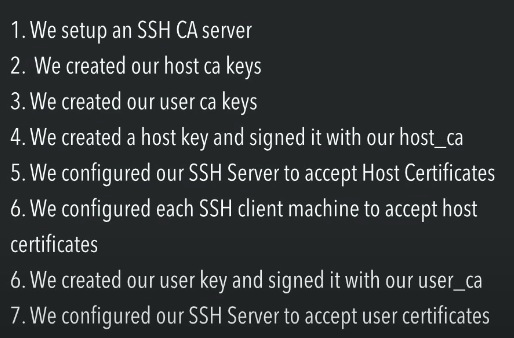
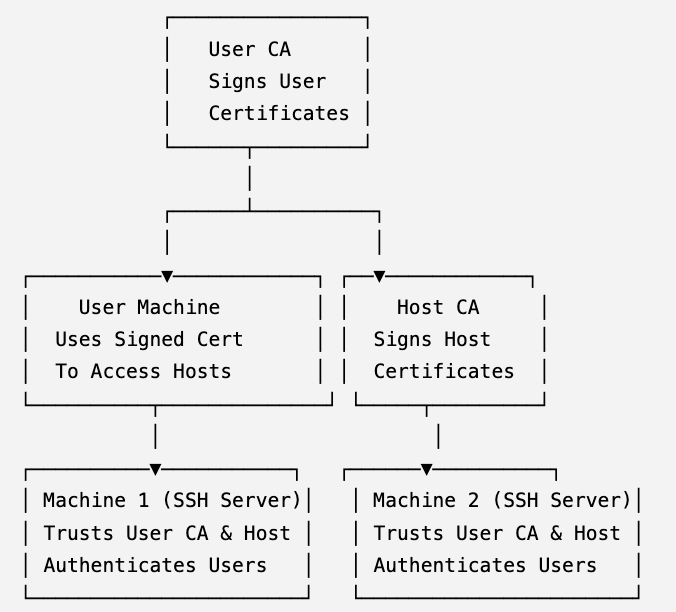

thisisvoid.in
thisisvoid.in
Secure SSH with Host and User CAs:
- in this blog we will look at the implementation with host and user CA
- host ca and user ca should be seperate. this is because in case of private key compromize you just have to issue host ca or user ca again not both.
- no not never ever share private key
- we need to sign the generated key with ca’s private key to generate the certificate
- for host certficates we sign with host ca’s key and for user certficates we sign with user ca’s key 
how things works:
-
let us assume: I have 1 machine which is certificate authority, 2 machines and 1 user. I want the user to acess both the machines using certificate based ssh. how so here we just have 1 CA for both user and host
overview of workflow:
-
The Certificate Authority (CA) signs public keys for the user, granting access to the machines.
-
The machines are configured to trust the CA, verifying the certificates issued by it.
-
The user uses their signed certificate to authenticate with the machines.
steps to implement:
1. Set Up the Certificate Authority (CA):
-
Log into the CA machine.
-
Generate a CA key pair:
ssh-keygen -f /etc/ssh/ssh_ca -C "Certificate Authority" -N ""
The flags -C and -N mean:
-C “Certificate Authority”: This adds a comment to the key. It’s typically used to help identify the purpose of the key. In this case, the comment is “Certificate Authority”. This is just metadata and doesn’t affect functionality.
-N “”: This sets the passphrase for the private key. An empty string “” means no passphrase is set, so the private key will not be encrypted. This is often used for automation, but it has security implications—anyone who gets the private key can use it without needing a password.
/etc/ssh/ssh_ca: Path to the CA private key. /etc/ssh/ssh_ca.pub: CA public key.
2. Configure Machines to Trust the CA:
On both machines (Machine 1 and Machine 2):
- Copy the CA’s public key (ssh_ca.pub) to each machine.
- Add the CA public key to /etc/ssh/sshd_config:
TrustedUserCAKeys /etc/ssh/ssh_ca.pub
- Restart the SSH service:
sudo systemctl restart sshd
3. Create the User’s Key Pair:
On the user’s machine:
- Generate an SSH key pair:
ssh-keygen -f ~/.ssh/id_rsa_user -C "user@yourdomain.com"
/.ssh/id_rsa_user: User’s private key. /.ssh/id_rsa_user.pub: User’s public key.
4. Sign the User’s Public Key:
On the CA machine:
- Copy the user’s public key (id_rsa_user.pub) to the CA machine.
- Sign the user’s public key:
ssh-keygen -s /etc/ssh/ssh_ca -I user_certificate -n <username> -V +30d ~/.ssh/id_rsa_user.pub
-s /etc/ssh/ssh_ca: Path to the CA private key.
-I user_certificate: Certificate Identifier.
-n
-
Provide the signed certificate (id_rsa_user-cert.pub) to the user.
5. Configure the User’s SSH Client:
On the user’s machine:
-
Add the CA public key and certificate to /.ssh/config:
Host machine1
Hostname <machine1-ip>
User <username>
IdentityFile ~/.ssh/id_rsa_user
CertificateFile ~/.ssh/id_rsa_user-cert.pub
Host machine2
Hostname <machine2-ip>
User <username>
IdentityFile ~/.ssh/id_rsa_user
CertificateFile ~/.ssh/id_rsa_user-cert.pub
6. Test the Connection:
From the user’s machine, connect to Machine 1:
ssh machine1
┌────────────────┐ ┌────────────────┐
│ User Machine │ │ CA Machine │
│ │ │ │
│ Generate │ │ Generate CA Key│
│ Key Pair │ │ Sign User Key │
└─────┬──────────┘ └──────┬─────────┘
│ │
│ Provide Public Key │
│ │
▼ ▼
┌──────────────────────────────────────────────────────┐
│ Machines (SSH Servers) │
│ │
│ Trust CA Public Key (TrustedUserCAKeys /etc/ssh_ca) │
│ Verify User Cert (id_rsa_user-cert.pub) │
└──────────────────────────────────────────────────────┘
Setting Up SSH with Two Certificate Authorities (User CA and Host CA)
this is the best practice
Overview of Workflow
- User CA: Signs user public keys to authenticate users
- Host CA: Signs host public keys to authenticate servers
- Machines trust the Host CA for server authentication, and the User CA for user authentication
Steps to Implement
1. Set Up the Certificate Authorities (CAs)
On the User CA machine:
ssh-keygen -f /etc/ssh/user_ca -C "User Certificate Authority" -N ""
This creates:
/etc/ssh/user_ca(private key)/etc/ssh/user_ca.pub(public key)
On the Host CA machine:
ssh-keygen -f /etc/ssh/host_ca -C "Host Certificate Authority" -N ""
This creates:
/etc/ssh/host_ca(private key)/etc/ssh/host_ca.pub(public key)
2. Sign Host Keys with Host CA
On each host machine (Machine 1 and Machine 2):
-
Generate a host key pair:
ssh-keygen -f /etc/ssh/ssh_host_rsa_key -N "" -
Copy the host’s public key (
ssh_host_rsa_key.pub) to the Host CA machine -
Sign the host key with the Host CA: “`bash sudo ssh-keygen -s /etc/ssh/host_ca -I pi -h -V +1w /etc/ssh/pi_ssh_host_rsa_key.pub
- `-h`: Indicates this is a host certificate
- `-I host_machine1`: Identifier for the host
- `-V +1y`: Certificate is valid for 1 year
4. Place the signed certificate (`ssh_host_rsa_key-cert.pub`) back on the host machine at `/etc/ssh/`
5. Configure sshd on each host machine:
```bash
# Update /etc/ssh/sshd_config
HostCertificate /etc/ssh/ssh_host_rsa_key-cert.pub
# Restart SSH
sudo systemctl restart sshd
you can configure principal,host user ca’s certs in ssd config
TrustedUserCAKeys /etc/ssh/AuditCue_Tech_cert.pub
AuthorizedPrincipalsFile /etc/ssh/auth_principals/%u
## in terminal
[ec2-user@ip-172-128-8-102 ssh]$ cd auth_principals/
[ec2-user@ip-172-128-8-102 auth_principals]$ ls -
ls: cannot access '-': No such file or directory
[ec2-user@ip-172-128-8-102 auth_principals]$ ls -l
total 4
-rw-r--r--. 1 root root 7 Feb 22 2024 ec2-user
[ec2-user@ip-172-128-8-102 auth_principals]$ cat ec2-user
devops
[ec2-user@ip-172-128-8-102 auth_principals]$
3. Configure Hosts to Trust the Host CA
On all machines, including the User CA machine:
- Copy the Host CA’s public key (
host_ca.pub) to each machine - Add it to
/etc/ssh/ssh_known_hostsfor server authentication:@cert-authority * ssh-rsa AAAAB3... host_ca.pub
4. Sign User Keys with User CA
On the User CA machine:
-
Receive the user’s public key (
id_rsa_user.pub) -
Sign the user key:
ssh-keygen -s /etc/ssh/user_ca -I user_certificate -n <username> -V +30d ~/.ssh/id_rsa_user.pub-s /etc/ssh/user_ca: Path to User CA private key-n <username>: Restrict certificate to specific username-V +30d: Certificate is valid for 30 days
-
Provide the signed certificate (
id_rsa_user-cert.pub) to the user
5. Configure Machines to Trust the User CA
On Machine 1 and Machine 2:
- Copy the User CA’s public key (
user_ca.pub) to each machine - Update
/etc/ssh/sshd_config:TrustedUserCAKeys /etc/ssh/user_ca.pub - Restart SSH:
sudo systemctl restart sshd
6. Configure the User’s SSH Client
On the user’s machine:
-
Add the host CA to
~/.ssh/known_hosts:@cert-authority * ssh-rsa AAAAB3... host_ca.pubthis step is optional and it is automatically done when you try to ssh into the machine
-
Configure the user’s
~/.ssh/config:
Host machine1
Hostname <machine1-ip>
User <username>
IdentityFile ~/.ssh/id_rsa_user
CertificateFile ~/.ssh/id_rsa_user-cert.pub
Host machine2
Hostname <machine2-ip>
User <username>
IdentityFile ~/.ssh/id_rsa_user
CertificateFile ~/.ssh/id_rsa_user-cert.pub
this step is optinal as well so ssh quickly. all you need to do after configuring this is to run Host machine2
echo "next we will look into architecture..."
System Architecture

Best Practices for Two CAs
Key Segmentation
- Use separate machines or secure storage for User CA and Host CA private keys
Key Protection
- Restrict access to CA private keys with strict permissions
Key Rotation
- Rotate both User CA and Host CA keys periodically
Short-lived Certificates
- Issue short-lived certificates for users to reduce the risk of compromise
Auditing and Logging
- Enable logging on SSH servers to monitor certificate-based logins and host authentications
config example:
Host machine1
Hostname 192.168.1.10
User ubuntu
IdentityFile ~/.ssh/id_rsa_user
CertificateFile ~/.ssh/id_rsa_user-cert.pub
Host machine2
Hostname 192.168.1.20
User root
IdentityFile ~/.ssh/id_rsa_user
CertificateFile ~/.ssh/id_rsa_user-cert.pub
his configuration ensures:
- Secure user authentication using a certificate signed by the User CA.
- Secure host verification using a certificate signed by the Host CA.
- A simplified and secure SSH connection process for the user.
1. Host
Each Host block specifies the settings for connecting to a particular remote server. The term “host” here refers to a remote machine you are connecting to using SSH. Each block is dedicated to one machine (e.g., machine1 or machine2).
2. Components of the Configuration
a. Host
Specifies the alias or name used in the configuration to identify a remote machine. Example: Host machine1 or Host machine2. When you run ssh machine1 or ssh machine2, the settings in the corresponding block will apply.
b. Hostname
Specifies the actual IP address or domain name of the remote machine.
Example:
-
this is nessary because this will verify the credibility of host certificate which is provided by host CA to this user.
/etc/ssh/ssh_known_hostsfor server authentication:@cert-authority * ssh-rsa AAAAB3... host_ca.pubthis * here allows all but we can configure that
c. User
Specifies the username you will use to log in to the remote machine. Example:
could be root, ubuntu, or any valid user on the remote machine. d. IdentityFile
Specifies the path to the user’s private SSH key. Example: ~/.ssh/id_rsa_user refers to the private key of the user that corresponds to the certificate (id_rsa_user-cert.pub).
e. CertificateFile
Specifies the path to the SSH certificate signed by the User CA. Example: ~/.ssh/id_rsa_user-cert.pub is the certificate file that proves the identity of the user, signed by the User Certificate Authority (User CA).
How the Configuration Works Together
Authentication Flow:
-
When you run ssh machine1, the SSH client uses the ~/.ssh/id_rsa_user private key and the ~/.ssh/id_rsa_user-cert.pub certificate to prove your identity.
-
The certificate is validated by the remote host against the trusted User CA key.
Host Verification:
-
The SSH client verifies the remote server (e.g., machine1) using the Host Certificate (ssh_host_rsa_key-cert.pub) signed by the Host CA.
Trust Relationship:
-
The remote machine trusts the User CA to verify the user’s certificate.
-
The SSH client trusts the Host CA to verify the host’s certificate.
Verifying the Legitimacy of a Host (
<machine1-ip>orexample.com)
The legitimacy of the hostname (<machine1-ip> or example.com) is verified using
the host certificate issued by the Host CA. Here’s a detailed explanation:
Verification of Host Legitimacy
1. Host Key and Certificate
- Each host (e.g.,
machine1andmachine2) has a private/public key pair:ssh_host_rsa_key(private key).ssh_host_rsa_key.pub(public key).
- The host’s public key is signed by the Host CA, creating a host certificate
(
ssh_host_rsa_key-cert.pub).
2. Trusted Host CA
- The SSH client is configured to trust the Host CA by adding the Host CA’s public key
to its
known_hostsfile or through configuration (TrustedHostKeysor@cert-authoritydirectives).
3. During Connection
- When the user initiates an SSH connection:
- The server provides its signed host certificate (
ssh_host_rsa_key-cert.pub) to the client. - The client verifies the certificate using the trusted Host CA public key.
- The server provides its signed host certificate (
4. Legitimacy Checks
The SSH client performs the following checks:
- Hostname Match: Ensures the hostname in the certificate matches the hostname of the server
(
<machine1-ip>orexample.com). - Expiration Date: Ensures the certificate is not expired.
- Signature Validation: Verifies that the certificate was issued by the trusted Host CA.
5. Trust Decision
- If the certificate passes all checks:
- The SSH client trusts the host and establishes the connection.
- If the certificate is invalid:
- The connection is terminated, and the client displays a warning.
How This Prevents Attacks
1. Man-in-the-Middle (MITM) Attack Prevention
- An attacker cannot forge a valid host certificate without the Host CA’s private key.
- If an attacker presents a fake hostname or certificate, the client will detect the mismatch and terminate the connection.
2. Impersonation Protection
- Only the legitimate host, with a private key corresponding to its signed certificate, can present a valid host certificate.
Key Configuration on the Client
To trust the Host CA, add the following entry to your ~/.ssh/known_hosts file:
@cert-authority *.example.com ssh-rsa AAAAB3NzaC1yc2EAAAABIwAAAQEArandomHostCAPublicKey
- add tustedhostca in sshdconfig path to public key ca